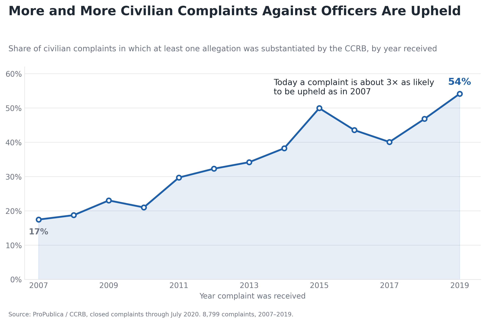
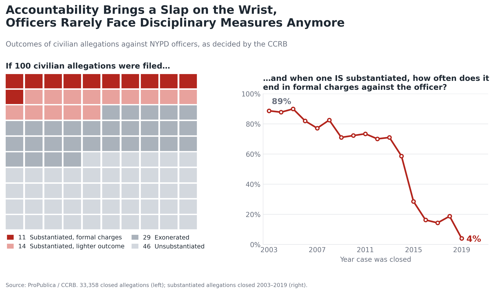

Proposition: “The NYPD civilian-complaint process increasingly holds officers accountable.”
Both visualizations below use the same dataset: civilian complaints against New York City police officers, as decided by the Civilian Complaint Review Board (CCRB), compiled by ProPublica. Each one is built from the same underlying records but is designed to push the reader toward the opposite conclusion about whether officers are being held accountable.
FOR the Proposition

Design Decisions and Rationale:
- Chose the start and end years carefully. The line begins in 2007, the low point of the series, and ends in 2019, so the chart shows the steepest possible climb and supports the headline claim that “more and more” complaints are upheld.
- Used the complaint, not the allegation, as the unit. A complaint counts as upheld if any of its allegations is substantiated. This is a much easier bar to clear than counting each allegation separately, which inflates the rate and the size of its increase.
- Binned by year received and kept only closed cases. Because only closed cases are included, the most recent years are made up mostly of complaints that were resolved quickly, which makes 2019 look better than it might once slower cases are included.
- Left out how serious the outcome was. The chart never shows whether a substantiated complaint led to formal charges. Including that dimension would have pulled the rate down, so it was dropped.
- Visual styling reinforces the message. A single confident blue line with a soft area fill, direct labels on the first and last points (17% and 54%), and an annotation (“about 3× as likely to be upheld”) tell the reader what to conclude before they study the axes.
AGAINST the Proposition

Design Decisions and Rationale:
- Switched to a metric that shows a collapse. The line chart uses the share of substantiated allegations that end in formal charges. This mixes a real decline with a change in how outcomes were coded after 2014, so the drop looks steeper and more meaningful than the underlying behavior may be.
- Counted allegations instead of complaints. At the allegation level, categories such as Force allegations, which are much less likely to be substantiated, drag the overall rate down. Counting complaints, as the first chart does, hides this.
- Used loaded language. The headline (“A Slap on the Wrist”, “Rarely Face Disciplinary Measures”) and the framing question tell readers how to feel before they have read any numbers.
- Ordered the waffle chart to favor the point. The red “formal charges” squares are packed into one small corner, while the grey squares for exonerated and unsubstantiated allegations take up the rest of the grid, so the outcome the proposition cares about looks like a tiny exception.
- Red palette and endpoint labels. A red palette signals alarm, and bold labels on the first and last points of the line (89% and 4%) anchor the reader on the most dramatic comparison.
Final Reflection
For this project I made two pairs of charts, one on NYPD civilian complaints and one on abortion clinic data from the Guttmacher Institute, and I chose to present the NYPD set. The deceptions in it are more subtle than in the abortion set, where much of the persuasion came from one-sided framing, such as showing only the states that lost clinics and using a red-only palette. In the police data, the two charts do not disagree about the facts. They differ in their unit of analysis (complaints versus allegations), the time window they show, and the outcome they measure (substantiated at all versus ending in formal charges). I found that more interesting, and more realistic, because every number on both pages comes from the same data and can be defended on its own.
Building both sides taught me that most of the persuasion in a chart happens before anything is drawn. Choosing the start and end year, deciding what counts as a case, deciding which outcomes to include, and deciding what to leave out each moved the story more than any color or annotation did. The visual choices, such as a calm blue line versus an alarm-red waffle chart, direct labels, loaded headlines and the ordering of the squares, then reinforce whatever the data choices already established. Because the charts are accurate in a narrow sense and misleading in context, they are hard to catch simply by checking whether the numbers are “right.”
As a reader, I will now ask a few questions of any persuasive chart: why does the time window start and end where it does, what is being counted (people, complaints, allegations), what is missing from the chart that would change the conclusion, and does the language of the title do work that the data has not earned? As a creator, I think the line between persuasive and deceptive is whether a reader who saw the full context would feel misled. Both of my charts would likely fail that test, which is why I would show them together, and why I would be open about the choices made if I were presenting either one on its own.